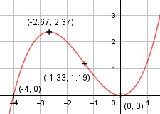

Aufgabe 25 f(x) = 0,25x3 + x2 f'(x) = 0,75x2 + 2x - 3, f''(x) = 1,5x + 2, f'''(x) = 1,5 Definitionsbereich: -∞ < x < ∞ Wertebereich: -∞ < f(x) < ∞ Asymptoten: - Symmetrie: - Nullstellen: 0,25x3 + x2 = 0 0,25x2 * (x + 4) = 0 0,25x2 = 0 | :0,25 x1,2 = 0 (Berührpunkt, Extrempunkt) x + 4 = 0| -4 x3 = -4 N1,2(0|0), N3(-4|0) Schnittpunkt mit der y-Achse: f(0) = 0,25 * 03 + 02 = 0 Sy(0|0) Extrempunkte: 0,75x2 + 2x = 0 8 0,75x * (x + ---) = 0 3 0,75x = 0 | :0,75 x1 = 0, f(0) = 0 8 8 x + --- = 0 | - --- 3 3 8 x2 = - ---, 3 8 8 8 f(- ---) = 0,25 * (- ---)3 + (- ---)2 = 2,37 3 3 3 f''(0) = 1,5 * 0 + 2 > 0 --> Tiefpunkt (0|0) 8 8 f''(- ---) = 1,5 * (- ---) + 2 < 0 --> 3 3 Hochpunkt (-2,67|2,37) Wendepunkte: 1,5x + 2 = 0 |-2 1,5x = - 2 | :1,5 x = - 4/3, f(- 4/3) = 0,25 * (- 4/3)3 + (- 4/3)2 = 1,19 f'''(- 4/3) ≠ 0 --> Wendepunkt (-4/3|1,19) Graph:
